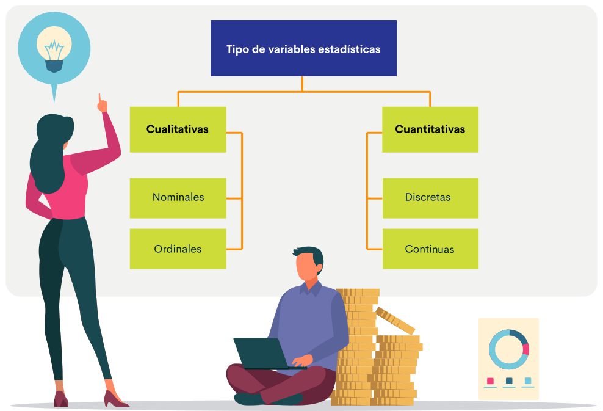

1. Actividad productiva
La actividad productiva enfocada en el sector primario, es toda acción que se relaciona con la producción, distribución, intercambio, comercialización y consumo de bienes y servicios; todo ello, con la finalidad de ser utilizado por el consumidor final, mediante un canal de distribución o directamente.
En la línea económica del sector primario o extractivo se encuentran todas las actividades que se dedican a obtener recursos directamente de la naturaleza y que no implican ninguna trasformación o proceso de industrialización para ser comercializado y llegar a un consumidor final.
Actualmente, este sector primario tiene un alto impacto de desarrollo económico, social y nutricional, ya que se proyecta tener un alto nivel de crecimiento debido a las exigencias de los clientes por consumir productos naturales, libres de agroquímicos, con excelentes propiedades organolépticas y que contribuyan con la preservación del medio ambiente. Por otra parte, con el aumento de la población mundial se requiere proyectar al sector extractivo para responder a la demanda interna, y convertirse en exportador.
Colombia, es país privilegiado por tener diferentes periodos de lluvias al año, una ubicación geografía particular, una topografía única (el levantamiento de tres cordilleras) que genera diferentes climas y ecosistemas, lo cual es propicio para diferentes actividades propias del sector primario.
Por consiguiente, en todo el territorio colombiano existen pequeños, medianos y grandes productores agropecuarios que son ejemplo de desarrollo, organización y liderazgo; los cuales se han posicionado en un nicho de mercado, trabajando individualmente o en algún tipo de agremiación, ya sea esta una asociación, cooperativa o federación.
Resumiendo un poco estas descripciones, a continuación, se dan a conocer algunos ejemplos de grandes empresas del sector primario:

FEDEPAPA - Federación Colombiana de Productores de Papa.
Agrupa a 90 mil papicultores, quienes producen entre 2.700.000 y 3.000.000 de toneladas al año, las cuales son cultivadas en 123.500 hectáreas.

AUGURA - Asociación de Bananeros de Colombia
Agrupa a empresarios y empresas comercializadoras de bananos de la región del Urabá. Exportan el 73 % de su producción a Europa. En 2016, la exportación de bananos fue de 93,4 millones de cajas.

CLAVECOL - Claveles Colombianos.
Es la mayor productora y exportadora de flores de Colombia, el mayor productor con unas 200 hectáreas sembradas y ventas superiores a los 20 millones de dólares.
1.1 Planteamiento del problema
Todas las ideas de negocio que surgen son importantes, de allí que la menos sonora puede llegar a ser la que genere una oportunidad de negocio. Por lo tanto, para iniciar un negocio se debe tener identificada la actividad económica a realizar y la idea en la que se pretende incursionar.
Se puede decir que toda empresa surgió siendo una idea; sin embargo, esta debió tener unas características que le permitieron convertirse en empresa y consolidarse como tal. En la mayoría de los casos, se parte de una o varias ideas de negocio, cada una de las cuales suelen ser una descripción general del interés a realizar como empresa. Por lo general, resulta ser insuficiente esta primera aproximación para crearla, por lo que es necesario avanzar en la Identificación de la Oportunidad de negocio que puede existir alrededor de la idea más atractiva; es decir, encontrar de qué forma se puede plantear la idea, de modo que sea realmente un negocio viable, rentable y perdurable en el tiempo.

Plantear el problema es identificar el objeto a aclarar, en otras palabras, darle solución a uno o más problemas o necesidades. Además, es el punto de partida de toda oportunidad de negocio con el que se estructura un plan de negocio, se hacen propuestas de forma general y emplean técnicas de investigación. El paso de la idea al planteamiento del problema puede ser inmediato o bien llevar mucho tiempo.
El planteamiento depende de cuán familiarizado esté el emprendedor con el tema a tratar, de la complejidad misma de la idea, de la existencia de estudios como antecedentes, del empeño del investigador y de sus habilidades personales para conceptualizar el problema y traducir su pensamiento de forma clara, precisa y accesible (López, Núñez, Pacheco, s.f.) El año de la publicación?
Arturo Calle, aguja colombiana a la altura de los grandes en moda masculina | Bogotá, 24 feb (Colombia.inn) (Imagen: J. Pablo Alemán).- Arturo Calle es la firma que le puso nombre a la moda masculina en Colombia y, con 50 años en el mercado local, ha empezado a exportar su concepto de prendas de calidad y a precios accesibles a los mercados de Centroamérica.
Historia de Crepes & Waffles | En Colombia existen muchos negocios regidos bajo el formato de las franquicias, conoce aquí una gran historia y un gran ejemplo de perseverancia en el tiempo para crecer como empresa.
1.2 Diagnóstico
El objetivo principal de efectuar un diagnóstico es identificar el problema o necesidad para caracterizarlo, con la finalidad de ver las posibles soluciones que tienen y generar el mayor impacto, ya sea desde la creación, producción, transformación, disminución de procesos, financieramente, socialmente o en afectación del medio ambiente.
Una vez elegido el tema o problema a investigar es necesario conocer sus componentes; es decir, la amplitud y contenido del mismo para precisar las características o valores de los requerimientos o fenómenos a solucionar. Lo que debemos saber es delimitar los alcances, errores, funciones, factibilidad, utilidades. (Universidad Javeriana, s.f.)
1.3 Clasificación de los problemas
El planteamiento de un problema se puede clasificar teniendo en cuenta principalmente dos factores:
Si responde con las expectativas.
No responde con las expectativas.
Cuando se dice "no responde a las expectativas” se refiere a que no ocurre lo que se espera, lo que significa que para detectar un problema es necesario conocer previamente la situación, el hecho o el proceso; solo así se podrá elaborar algún tipo de explicación de lo que se está observando.
Toda información obtenida en un proceso de diagnóstico y recopilación de la información, es útil mientras que se inicia su valoración, ya sea de forma cualitativa o cuantitativa. Dicha clasificación permite analizar, estudiar e identificar aspectos específicos de la situación a solucionar, con lo que se jerarquiza el conocimiento a buscar, el cual debe ser claro y conciso, de forma que sea fácil identificar el problema a solucionar. De esta forma se delimita la extensión del problema junto con su: factibilidad, originalidad, relevancia, interés, etc.
Factibilidad
Apreciación descrita desde el nivel del servicio en el cual se enfoca el problema y se cuenta con los recursos: humanos, financieros, sociales, culturales, educativos, técnicos, tiempo, destreza, etc. Estos factores el emprendedor los debe tener presente y responder afirmativamente a la gran mayoría de estas preguntas, por no decir a todas, para iniciar un estudio de mercados, ya que depende de la solidez con la que se inicia una pesquisa para que esta concluya negando o afirmando verdades científicas.
Originalidad
Se refiere a que el problema no haya sido investigado con anterioridad o si ya se realizó un estudio previo, este se enfoque en otro aspecto nuevo o con variables en valores, escalas de medición u otros aspectos metodológicos diferentes.
Relevancia
Enfocada en la información teórica que hace referencia al objeto de estudio, la cual será fundamental para fortalecer los conocimientos previos y serán soporte teórico para discernir dudas en este nuevo conocimiento. La información debe ser actualizada y valorada por una entidad científica.
Interés
Motivación propia del emprendedor. Debe ser espontáneo y permitir concluir con su trabajo la investigación, al responder a los fenómenos creadores del problema.
1.4 Sector productivo
En la economía existen distintos sectores productivos que conforman las divisiones de la actividad económica. Estas divisiones están relacionadas con el tipo de proceso de producción que desarrollan y se dividen en tres: sector primario o agrícola, sector secundario o industrial y sector terciario o de prestación de servicios.
A continuación, se describen las características de cada uno de los sectores de la economía, su alcance e importancia:
Se caracteriza porque a partir de sus actividades primarias se obtienen todos los productos directamente de los recursos naturales y son consideradas como materias primas no elaboradas, destinadas a procesos industriales y de transformación. A este sector de la economía se le incluye: la agricultura, la ganadería, la silvicultura, la caza y la pesca.
Es el que sus actividades están centradas en la producción industrial y comprende todas las actividades económicas de un país, relacionadas con la extracción y la transformación industrial de materias primas de bienes o mercancía que se utilizan como base fundamental para la fabricación de nuevos productos o para abastecer directamente las necesidades del mercado mediando entre productores, distribuidores y comerciantes. Se consideran parte de este sector industrial: la minería y la extracción de petróleo a pesar de ser fuentes primarias de recursos naturales renovables y no renovables.
El sector industrial se subdivide en dos subsectores: el industrial o extractivo que cubre a las industrias mineras y petrolíferas y el industrial o de transformación que corresponde a las empresas dedicadas al envasado, embotellado, manipulación y transformación de materias primas y/o productos semielaborados.
Hace referencia a todas las actividades que no producen una mercancía como tal, pero que se encargan de abastecer al mercado de bienes y servicios y son fundamentales para el correcto funcionamiento de la economía. A este sector se adscriben: el comercio, las industrias hoteleras y de restauración, el transporte, los servicios financieros, las comunicaciones, los servicios de educación, los servicios profesionales, las administraciones públicas.
1.5 Entorno
Se ha considerado el entorno como el conjunto de circunstancias o factores físicos, sociales, culturales, económicos, profesionales, medioambientales, etc., que rodean una circunstancia o un entorno productivo en un periodo de tiempo determinado y con el que afecta su desarrollo.
Los elementos principales del entorno empresarial son: clientes, proveedores, competidores, administraciones públicas, entidades financieras, comunidad, mercado laboral y componente económico.
La empresa no es una entidad que trabaja de manera aislada, sino que interactúa permanentemente con lo que la rodea; es decir, todos los entes que hacen parte para su funcionamiento como son: los clientes, los proveedores, las empresas, el gobierno, la tecnología, entre otros.
El entorno de una empresa está constituido por todos los factores externos que influyen en sus actividades cotidianas y se subdivide en dos componentes: entorno general y entorno específico.
Entorno General
Hoy vamos a hablar de un aspecto que es muy importante para realizar los diagnósticos ambientales en las comunidades: el enfoque diferencial.
Entorno específico
Son aquellos elementos que tienen relación particular con la empresa y la afectan directamente a ella en su funcionamiento. Se han definido como: los proveedores, los clientes, las otras empresas que representan una competencia y la comunidad en la que se desenvuelve la empresa.
1.6 Recolección de la información
Para tener mayor claridad en el proceso de recolección de la información, es necesario entender la diferencia entre técnica e instrumento. El instrumento es tangible y se utiliza para medir o registrar un evento como por ejemplo un cuestionario, un termómetro, entre otros. Mientras que la técnica comprende los pasos para recaudar datos obtenidos en un proceso de recolección de la información; este registro se puede hacer de forma visual de lo que ocurre en una situación real, clasificando y consignando los acontecimientos pertinentes de acuerdo con algún esquema previsto y según el problema que se estudia. Es un método que permite obtener datos cuantitativos y cualitativos. En esta misma línea, se puede realizar la observación directa por parte de los participantes, donde implica que el emprendedor o el responsable de recolectar los datos o la información se involucre directamente con la actividad objeto de la información recopilada sin perder la Objetividad.
Por otra parte, existe la observación indirecta que se hace con individuos que no participan directamente en el hecho, ocurriendo esto cuando el emprendedor no tiene ningún tipo de relaciones con los sujetos que sean observados, ni forma parte de la situación en la que se dan los fenómenos en estudio. En esta modalidad, al no involucrarse el emprendedor, los datos recogidos pueden ser más objetivos.
La encuesta es otra una técnica empleada, con ella se pretende obtener información que suministra un grupo o muestra de sujetos acerca de sí mismos o en relación a un tema en particular. Esta puede ser oral a través de la entrevista o escrita por medio de un cuestionario.
Otra técnica utilizada y también como instrumento de aplicación es la entrevista, aquella que se emplea para la recolección de la información y que se efectúa de forma interpersonal entre el emprendedor y el sujeto de estudio, a fin de obtener respuestas verbales a los interrogantes planteados sobre el problema propuesto.
A continuación, se describen algunas de las fuentes de información y cómo pueden clasificarse:
Tabulación
El proceso de tabulación de información comienza con el análisis de los registros plasmados en las tablas de información, en las que se encuentra información clara, inmediata y veraz de los resultados obtenidos por el emprendedor, provenientes de las variables objeto de estudio.
Existen varios tipos de tablas que facilitan el registro de la información y su análisis como son las denominadas tablas de entrada, en las cuales solo aparecen los datos que se obtuvieron en la recolección de la información. Son las más sencillas y se utilizan para registrar datos con una sola variable.
En relación a la tabla de contingencia, esta contiene más de dos variables y está formada de manera general por un encabezado de filas con valores de una variable y las de las columnas por la otra y en las casillas de la tabla, por las frecuencias o números de elementos que reúnen a la vez los valores de las dos variables que se cruzan en cada casilla.
A continuación, se muestra un gráfico que resume los tipos de tablas que son utilizadas para realizar el registro de información con una sola variable.
Y ahora, se ejemplifica a través de la siguiente tabla, la recolección de información de dos o más variables:
Herramientas para el procesamiento de datos y metodología estadística
2.1 Fuentes de información
Se consideran como fuentes de información a todo instrumento que ofrezca algún tipo de conocimiento, sea este de carácter técnico, científico o información de interés relevante para el consultor, la cual proviene de fuentes confiables que puedan ser validadas científicamente y estar disponibles para su consulta.

El Instituto Colombiano Agropecuario (ICA) es la entidad encargada de normalizar la producción de agroquímicos en Colombia, y es en su página oficial:
En la actualidad, la difusión del conocimiento se realiza a través de las TIC y es difundido por medio del internet. El internet es un medio que ha adquirido un alto nivel de importancia en procesos de consulta de información, aunque hay que resaltar que no toda la información que circula es confiable. La utilidad de las fuentes de información, viene determinada por su respuesta a la necesidad de los usuarios.
Al momento de localizar un instrumento que ofrezca información importante que es objeto de estudio, se puede consultar en medio físico o electrónicamente, teniendo en cuenta que existen dos tipos de fuentes:
Fuentes para la búsqueda directa de la información.
Fuentes para la localización e identificación del documento.
Fuentes para la búsqueda directa de la información
En referencia a las fuentes para la búsqueda directa de información, se pueden enumerar aquellas que ofrecen información primaria (contienen información original). Entre estas se encuentran: digitalizadas y disponibles en internet, monografías, tesis, revistas, periódicos y documentos en general. Por lo anterior, Muñoz (2011), a través de su portal web indica:
En internet encontramos sobre todo obras monográficas de escritores a texto completo. En la red están disponibles mayoritariamente aquellas obras y escritos que han dejado de ser propiedad intelectual de sus autores o herederos/as por haber perdido su vigencia. Aunque cada vez se encuentran más obras editadas con la intención de difundirlas en la red, estas suelen ser publicadas por instituciones públicas.
Las publicaciones periódicas ofrecen un gran apoyo en los trabajos de investigación. Internet brinda un soporte de grandes ventajas para la difusión de revistas especializadas en diversos temas, tanto científicas como de divulgación, entre ellas la accesibilidad desde cualquier parte del mundo y la rapidez en la circulación de los contenidos científicos.
Otras características de las revistas electrónicas que suponen una ventaja son: costo económico reducido, difusión global, calidad de reproducción de las imágenes, suscripción y envío electrónico de trabajos, suscripción personalizada, presencia de hipertexto, almacenamiento digital, buena comunicación autor-lector e independencia comercial.
No todas las revistas accesibles en formato electrónico ofrecen su contenido a texto completo, algunas solo presentan índices o algunos artículos previamente seleccionados. La mayoría de las grandes revistas científicas se pueden consultar en formato electrónico, pero con la desventaja de que en algunas para ello debemos suscribirnos previo al pago.
Entre las fuentes de información existen unas que han sido diseñadas especialmente para servir como instrumentos eficaces en las tareas informativas y se denominan "obras de referencia" o de consulta. Son obras realizadas intencionadamente para la consulta rápida. Son las fuentes apropiadas por sus objetivos, plan ordenado, y forma de tratar los temas, para la consulta con fines de información. Dentro de las obras de referencia que se encuentran en internet distinguiremos entre:
Enciclopedias
Son las obras de consulta por excelencia, concebidas para resolver dudas, ampliar conocimientos o para saber más sobre un tema concreto. Pueden estar ilustradas con fotografías, dibujos o mapas. Las enciclopedias no son muy consultadas actualmente.
Diccionarios especializados
Son obras de referencia ordenadas alfabéticamente que recogen, definen y aclaran el vocabulario de un área del saber.
Directorios
Son listas de personas, instituciones, organizaciones, etc., ordenadas alfabéticamente o por materia y que ofrecen los datos más importantes para su identificación.
Repertorios biográficos
Son obras, generalmente en forma de diccionario, que contienen biografías de personajes ilustres que han destacado a lo largo de la historia en algún campo de la actividad que ejercían. En internet son numerosas las obras de este tipo debido al interés social.
Estadísticas
Las estadísticas se han convertido en un instrumento de análisis y toma de decisiones imprescindibles para las personas que trabajan en la política, los profesionales e incluso los ciudadanos que pretendan estar informados. Las funciones que deben permitir las estadísticas son: ayudar mediante la representación de datos o gráficos, a resumir y extraer la información. Permite descubrir y calcular patrones o conductas que se muestran en los datos y facilita la comunicación entre científicos y profesionales.
Fuentes para la localización e identificación del documento
Siguiendo lo expresado por la autora Muñoz (2011), las fuentes para la identificación y localización del documento son también denominadas "de información directa o inmediata" y son:
Bibliografías
Son listados de referencias bibliográficas elaboradas con rigor, es decir, siguiendo un método establecido. Las bibliografías o listados bibliográficos que están presentes en la red hacen alusión a referencias bibliográficas de monografías y publicaciones periódicas. La mayoría de ellas están especializadas en una determinada materia.
Catálogos de bibliotecas
Los instrumentos para la búsqueda bibliográfica son las bases de datos bibliografías y los catálogos de bibliotecas. La diferencia entre ambas, es que las primeras identifican los documentos y las segundas además de identificarlos, los localizan físicamente.
En cuanto al contenido, se diferencian en que las bases de datos bibliográficas, en su mayoría recogen los artículos de las publicaciones periódicas mediante un análisis del contenido, mientras que los catálogos recogen los datos de identificación de monografía y de publicaciones periódicas.
Tomado de Muñoz (2011), en su artículo Las fuentes de información.
En el siguiente gráfico, se resumen los diferentes tipos de fuentes de información, cada una con sus correspondientes subdivisiones:
Tipos de fuentes de información
2.2 Estadística
La estadística está considerada como el arte de realizar inferencias y sacar conclusiones a partir de datos obtenidos de diversas fuentes consideradas como imperfectas. Lo anterior quiere decir, que a pesar de tener conocimiento de la información, hasta que esta no sea analizada y tabulada no será relevante, aun cuando esta sea útil e importante. Esto se hace con el fin de comprender mejor las situaciones o hechos presentados.
Para ser más exactos, Orellana (2001), afirma:
Algunas técnicas de análisis de datos son simples de utilizar más allá del hecho que la teoría matemática que las sustentan puede ser muy compleja. Todos, aún los estadísticos, tenemos problemas al enfrentarnos con listados de datos, tablas, gráficos o tortas.
Existen muchos métodos estadísticos cuyo propósito es ayudarnos a poner de manifiesto las características sobresalientes e interesantes de nuestros datos que pueden ser usados en casi todas las áreas del conocimiento. Los métodos estadísticos son empleados en todas las etapas de una investigación, desde el comienzo hasta el final. En síntesis, el objetivo de todo proceso estadístico es recopilar, tabular, clasificar, analizar y sacar conclusiones. Información que debe ser relacionada con el diseño de la investigación, para establecer el método de análisis para un problema, se basa tanto en el tipo de datos disponibles como en la forma en que fueron recolectados.
2.3 Variables estadísticas

Se entienden como el conjunto de valores que puede tomar cierta característica de una muestra sobre la que se está realizando el estudio estadístico y sobre la que es posible su medición. Las variables estadísticas se pueden clasificar por diferentes criterios y pueden ser de dos tipos: cualitativas y cuantitativas. Las variables cualitativas se clasifican a su vez en nominales y ordinales, en tanto que las cuantitativas lo hacen en discretas y continuas.
Por ejemplo:
Variables cualitativas
Nominales
Color de ojos de una persona: azules, verdes, cafés.
Ordinales
La condición de la Visa de una persona sea aprobada, denegada o en espera.
Variables cuantitativas
Discretas
Cantidad de hermanos que posee una persona: 2, 3, 4.
Continuas
La estatura de una persona: 1,70 cm.
En la siguiente imagen se resumen la clasificación de los tipos de variables estadísticas:
Glosario
Diagnóstico:se denomina la acción y efecto de diagnosticar. Como tal, es el proceso de reconocimiento, análisis y evaluación de una cosa o situación para determinar sus tendencias, solucionar un problema.
Ecología:es una rama de la biología en la que se estudian y analizan las interacciones entre los seres vivos con el hábitat donde se encuentran.
Economía:ciencia que estudia los recursos, la creación de riqueza y la producción, distribución y consumo de bienes y servicios, para satisfacer las necesidades humanas.
Industria:actividad económica y técnica que consiste en transformar las materias primas hasta convertirlas en productos adecuados para satisfacer las necesidades de los humanos.
Insumo:bien de cualquier clase empleado en la producción de otros bienes.
Medio ambiente:conjunto equilibrado de elementos que engloban la naturaleza, la vida, los elementos artificiales, la sociedad y la cultura, que existen en un espacio y tiempo determinado.
Proveedor:persona o empresa que abastece a otras empresas con existencias y bienes, artículos principalmente, los cuales serán transformados para venderlos posteriormente o que directamente se compran para su venta.
Sector primario:se denomina aquel sector de la economía que comprende las actividades productivas de la extracción y obtención de materias primas, como la agricultura, la ganadería, la apicultura, la acuicultura, la pesca, la minería, la silvicultura y la explotación forestal.
Material complementario
| Nombre del documento o material. | Tipo de material. | Enlace del Recurso. |
|---|---|---|
| Minagricultura, (2020), Juntos por el campo. | Página web | ver |
Referencias bibliográficas
Fondo Emprender. (2014). Metodología para la implementación de buenas prácticas de formulación Fondo Emprender.
García, J. A. (2020). Los sectores de producción, características y relación con la economía. EAE Business School. https://retos-operaciones-logistica.eae.es/los-sectores-de-produccion-y-sus-caracteristicas/
Muñoz, A. M. (2011). Las fuentes de información. http://www.ugr.es/~anamaria/fuentesws/Intro-FI.htm
Orellana, L. (2001). Estadística descriptiva. Universidad de Buenos Aires.
Rodríguez, D. (2020). Sector Primario en Colombia: Características e Importancia. Lifeder. https://www.lifeder.com/sector-primario-colombia/
Santos, E. (2019). Clasificación de fuentes de información. https://www.unprofesor.com/ciencias-sociales/clasificacion-de-fuentes-de-informacion-3246.html
SENA y Fondo Emprender. (2019). Buenas prácticas de formulación “Nueva estructura plan de negocios Fondo Emprender”. Coordinación Nacional de Emprendimiento, Dirección de Empleo y Trabajo. Dirección General.
Significados. (2020). Significados, conceptos y definiciones sobre los temas más variados. https://www.significados.com/
Torres, I. (1999). Las fuentes de información: estudios teórico-prácticos. Síntesis, ISBN: 84-7738-460-9.
Torres, I. (2003). Los recursos informativo-documentales para los Estudios de las Mujeres. Panorámica breve desde Europa. hhttp://www.mujeresenred.net/isabel_de_torres.html
Universidad Javeriana. (s.f.). Planteamiento del problema. Consultado el 07 de octubre de 2020 en http://cmap.javeriana.edu.co/servlet/SBReadResourceServlet?rid=1267279865841_1737947709_14119
Fotografías y vectores tomados de https://www.shutterstock.com/ y https://www.freepik.es/
Licencia Creative Commons
CC BY-NC-SA
Ver licencia.